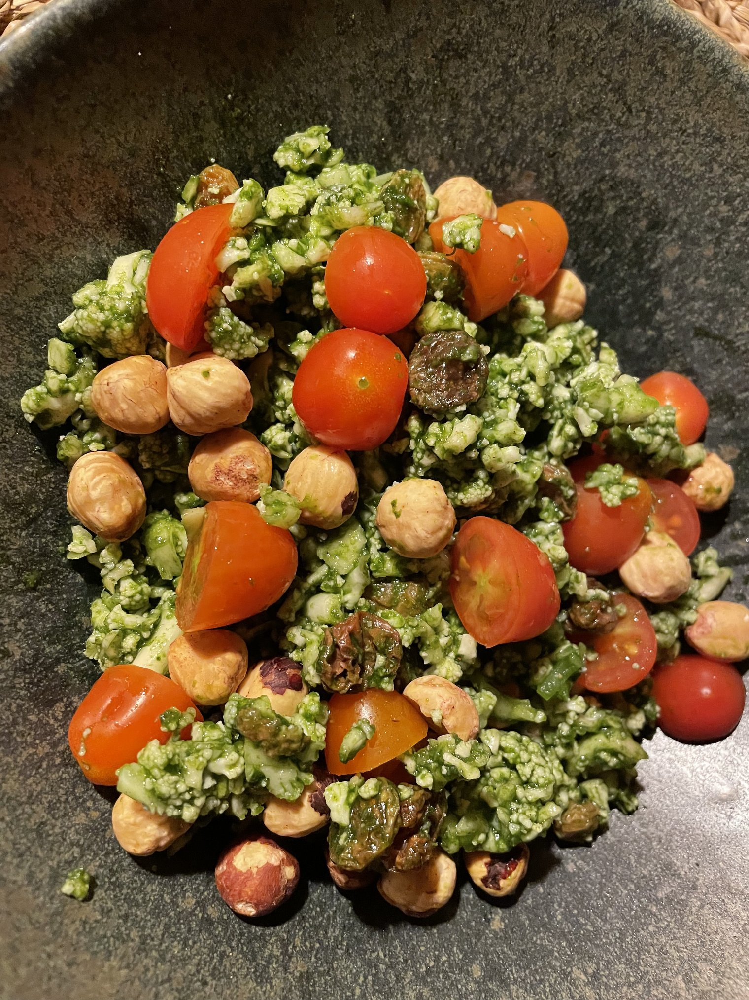

Ensalada de brócoli crudo con avellanas y pasas
Ingredients
2×
- 1 brócoli
- 2 cdas de pesto
- aceite de oliva
- zumo de limón
- sal
- 1 puñado de avellanas tostadas
- 150 g de tomates cherry
- 1 puñado de pasas

Preparación
Paso 1
Picar muy fino 1 brócoli (a cuchillo o en la picadora, como un cuscús).
Paso 2
Aliñar con 2 cdas de pesto (o aceite de oliva, zumo de limón y sal).
Paso 3
Añadir 1 puñado de avellanas tostadas, 150 g de tomates cherry partidos y 1 puñado de pasas.